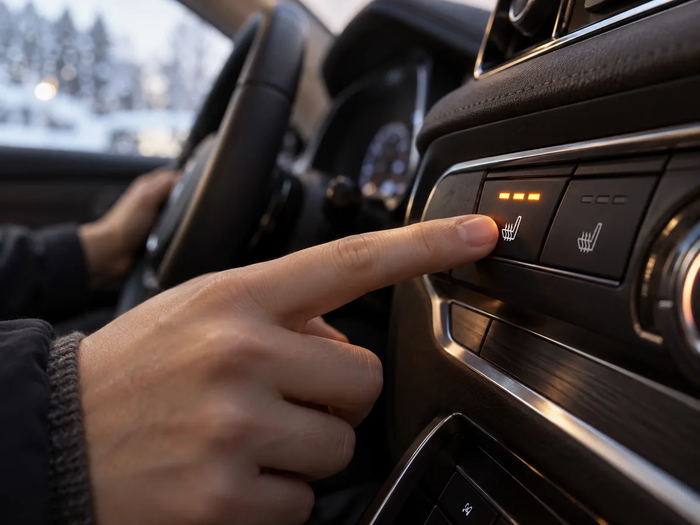
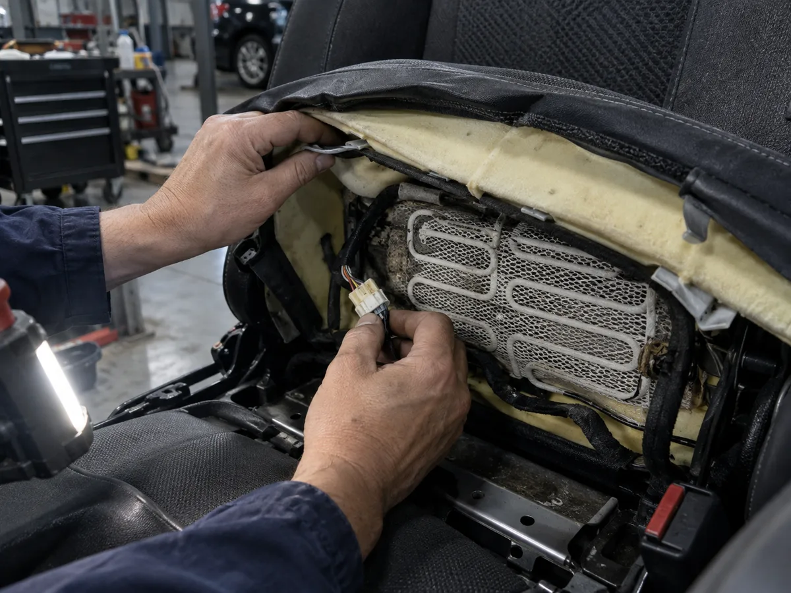
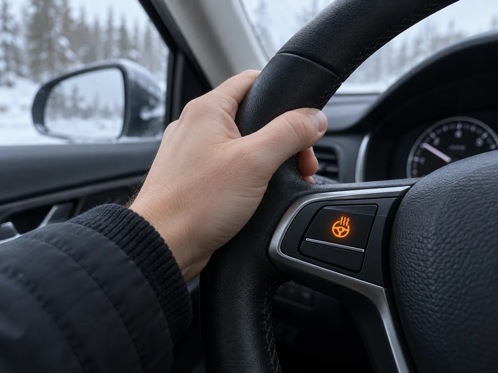
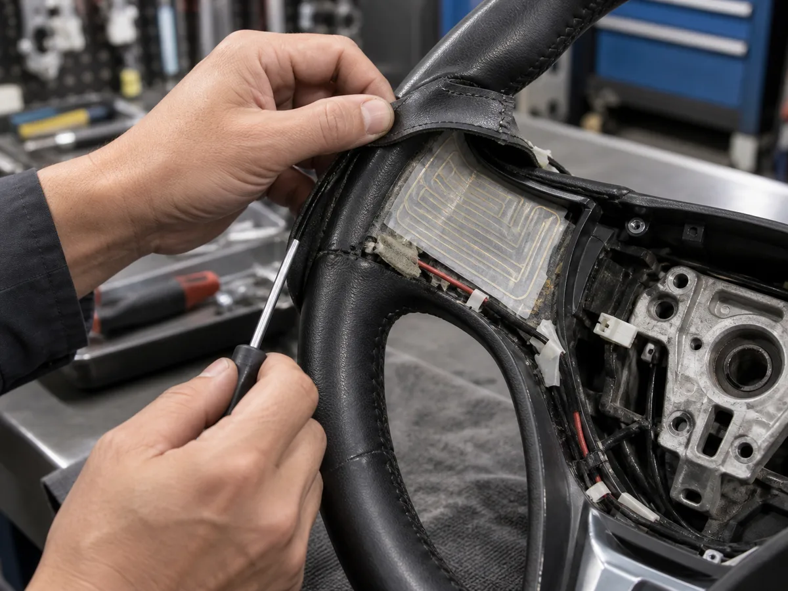

▲ 열선시트는 시트 밑에 깔린 필름형·와이어형 발열체에 전류를 흘려 열을 낸다 ⓒ AI 생성 이미지
1. 열선시트·열선핸들은 어떻게 따뜻해질까
열선시트는 시트 쿠션과 등받이 안쪽에 넣은 니크롬선(와이어형) 또는 탄소 필름(카본 필름형) 발열체에 전류를 흘려 열을 내는 구조다. 발열체 위에는 온도 센서가 함께 붙어 있어서, 표면 온도가 일정 수준(대략 40℃ 안팎)을 넘으면 자동으로 전류를 끊었다가 온도가 내려가면 다시 흘려보내는 식으로 켜짐과 꺼짐을 반복한다. 그래서 열선시트는 계속 뜨거운 게 아니라 미세하게 온도가 오르내리는 게 정상이다.
열선핸들의 원리도 비슷하다. 스티어링 휠 가죽 커버와 심재 사이에 얇은 필름형 열선 패드를 넣고, 스위치를 누르면 전류가 흘러 패드 전체가 균일하게 데워진다. 제조사 안내에 따르면 시트 열선은 버튼을 누른 뒤 30초~1분 안에, 핸들 열선은 2~3분 안에 체감 온도(약 40~45℃)에 도달하도록 설계돼 있다. 두 장치 모두 시동이 꺼지면 함께 꺼지고, 배터리 전압이 낮을 때는 보호 로직에 따라 작동이 제한될 수 있다.
2. 자주 발생하는 고장 유형 4가지

▲ 시트 커버를 젖히면 그물망 형태의 열선 발열 패드와 커넥터가 드러난다 ⓒ AI 생성 이미지
열선시트·열선핸들이 작동하지 않을 때 원인은 대체로 아래 네 가지 중 하나로 좁혀진다. 부품 단가가 낮은 순서대로 의심하는 게 진단 시간과 비용을 아끼는 방법이다.
| 고장 유형 | 증상 | 발생 부위 |
|---|---|---|
| 퓨즈 단선 | 버튼을 눌러도 표시등조차 안 들어옴 | 퓨즈박스 |
| 스위치 접촉불량 | 표시등은 켜지는데 열이 안 남, 또는 버튼이 눌리지 않음 | 센터페시아·핸들 스위치 접점 |
| 커넥터 접촉불량 | 일부 구간만 안 뜨거움, 흔들면 잠깐 작동 | 시트·핸들 내부 배선 커넥터 |
| 발열체(열선) 단선·손상 | 완전히 작동을 멈춤, 한쪽만 뜨거움 | 니크롬선 또는 카본 필름 패드 자체 |
가장 흔한 원인은 발열체 자체의 단선이다. 특히 운전석 시트는 타고 내릴 때마다 엉덩이 무게로 눌리고 접히기를 반복하기 때문에, 오래 탄 차일수록 와이어형 열선이 특정 지점에서 끊어지기 쉽다. 단선된 열선은 이어붙일 수 없고 시트 커버를 열어 패드 전체를 교체해야 하는 경우가 대부분이다. 반면 퓨즈 단선은 가장 저렴하고 간단하게 해결되는 고장으로, 중고차나 겨울철 전기 부하가 몰리는 시기에 흔히 나타난다.
열선핸들은 구조상 스티어링 휠 안의 클럭스프링(혼·에어백·핸들 리모컨 신호를 전달하는 부품)을 함께 지나는 경우가 있어, 핸들 열선이 갑자기 안 되면서 혼이나 리모컨 버튼도 같이 말썽이라면 클럭스프링 쪽 배선을 함께 의심해봐야 한다.
3. 셀프 점검법과 정비소에 가야 하는 순간
순서대로 확인하기
- 퓨즈박스 확인 — 운전석 하단 또는 엔진룸 퓨즈박스에서 열선 관련 퓨즈가 끊어졌는지 육안으로 확인한다. 여분 퓨즈로 교체해봐서 작동하면 원인 확정.
- 표시등 점등 여부 — 버튼을 눌렀을 때 표시등만 켜지고 열이 안 난다면 발열체·커넥터 쪽, 표시등조차 안 켜지면 퓨즈·스위치·배선 쪽 문제일 가능성이 크다.
- 부분 작동 여부 — 시트나 핸들의 특정 부위만 뜨겁지 않다면 그 구간의 열선이 국부적으로 단선됐을 확률이 높다.
- 흔들었을 때 반응 — 시트에 앉은 채 몸을 움직이거나 핸들을 좌우로 돌렸을 때 작동이 들어왔다 끊겼다 한다면 커넥터 접촉불량 쪽에 무게가 실린다.
퓨즈 교체만으로 해결되지 않는다면 이후 단계는 시트·핸들을 직접 분해해야 하는 영역이다. 시트 커버를 함부로 뜯다가 스테이플이나 클립을 손상시키면 오히려 수리비가 늘어날 수 있고, 핸들은 에어백이 내장된 부품이라 배터리 마이너스 단자를 분리하지 않고 임의로 분해하면 안전사고 위험이 있다. 이 단계부터는 정비소에 맡기는 편이 비용과 안전 면에서 합리적이다.
4. 시트커버·핸들커버를 씌울 때 주의할 점
제조사 취급설명서는 공통적으로 순정 이외의 시트 커버를 임의로 장착하지 말 것을 경고한다. 사제 시트 커버를 씌우면 열선 패드 위에 두꺼운 천이 덧대지면서 열이 잘 빠져나가지 못해 국부적으로 과열되거나, 커버를 씌우고 벗기는 과정에서 클립·스테이플이 열선 배선을 긁어 단선시킬 수 있기 때문이다. 같은 이유로 좌석에 두꺼운 모포나 방석을 깔아두는 것도 과열의 원인이 되므로 피해야 한다.
핸들커버(스티어링 휠 커버)도 마찬가지다. 열선핸들 위에 별도의 가죽·우레탄 커버를 씌우면 온도 센서가 실제 표면 온도를 제대로 감지하지 못해 자동 차단 로직이 오작동할 수 있고, 커버를 채결하는 과정에서 내부 필름형 열선이 눌리거나 찢어지는 사례도 보고된다. 열선핸들 차량이라면 커버 장착 자체를 피하거나, 장착이 꼭 필요하다면 열선 사용 차량용으로 표기된 제품인지 먼저 확인하는 게 안전하다.
5. 겨울 대비 사전 점검 체크리스트
| 점검 항목 | 확인 방법 |
|---|---|
| 전 좌석 열선 작동 여부 | 운전석뿐 아니라 조수석·뒷좌석까지 버튼을 눌러 표시등과 발열 여부를 확인 |
| 열선핸들 균일 발열 | 핸들을 돌려가며 손으로 감싸 쥐고 부위별 온도 차이가 없는지 확인 |
| 퓨즈박스 예비 퓨즈 | 취급설명서에 표기된 열선 관련 퓨즈 용량과 여분 퓨즈 보유 여부 확인 |
| 배터리 상태 | 겨울철은 히터·열선·서리 제거 등 전력 소모가 몰리는 시기이므로 배터리 노후 여부 점검 |
| 시트커버·핸들커버 점검 | 씌워둔 커버가 있다면 열선 표시등이 정상적으로 반응하는지 재확인 |
겨울철에는 히터, 열선시트, 열선핸들, 후방열선(디포거)까지 전기 부하가 한꺼번에 몰리기 때문에, 평소 문제없던 배선의 접촉불량이 이 시기에 처음 드러나는 경우가 많다. 첫 추위가 오기 전 미리 한 번씩 눌러 확인해두면 정작 추운 날 고장을 발견하는 상황을 피할 수 있다.
6. 저온화상 위험과 안전 수칙

▲ 40~50℃의 낮은 온도라도 장시간 같은 부위에 닿으면 저온화상으로 이어질 수 있다 ⓒ AI 생성 이미지
저온화상은 피부가 40~50℃ 정도의 비교적 낮은 온도에 장시간 노출될 때 발생하는 화상으로, 뜨겁다는 통증을 뚜렷하게 느끼지 못하는 사이에 일어난다는 점이 가장 위험하다. 열선시트·열선핸들 모두 정상 작동 중이라도 장거리 운전에서는 이 위험에서 자유롭지 않다.
저온화상 고위험군 — 아래에 해당하면 더 주의
- 유아·어린이, 고령자, 신체가 부자유스러운 탑승자
- 피부 감각이 예민하지 않거나 당뇨 등 지병이 있는 경우
- 과로·과음 상태, 수면제·감기약 등 졸음을 유발하는 약물 복용 후
- 젖은 옷을 입은 채 장시간 열선을 켜두는 경우
대부분의 신차는 온도 센서 기반 자동 차단 로직이 들어가 있지만, 장시간 정차하거나 같은 자세로 오래 앉아 있을 때는 수동으로 온도 단계를 낮추거나 중간에 꺼주는 습관이 안전하다. 좌석에 담요나 방석을 겹쳐 깔면 열이 빠져나가지 못해 저온화상 위험이 커지므로 피해야 한다.
7. A/S 비용대는 얼마나 될까

▲ 핸들 열선은 가죽 커버 안쪽의 얇은 필름형 패드가 핵심 부품이라 손상되면 패드 전체를 교체해야 한다 ⓒ AI 생성 이미지
국산 중형차 기준으로 통상 거론되는 수리비 구간은 다음과 같다. 다만 차종·정비소·부품 유통 상황에 따라 편차가 크므로 실제 견적은 방문 확인이 필요하다.
| 고장 유형 | 대략적 비용 구간 |
|---|---|
| 퓨즈 교체 | 1만~2만원 |
| 스위치 교체 | 3만~5만원 |
| 시트 열선(발열체) 교체 | 15만~25만원 |
| 핸들 열선 패드 교체(부품+공임) | 부품 10만원 안팎 + 공임 5만~15만원 |
같은 고장이라도 수입차는 부품 수급 구조상 국산차보다 비용이 3~5배가량 높게 나오는 경우가 많다는 점도 참고할 만하다. 보증기간 내 차량이라면 정상적인 사용 중 발생한 열선 단선은 무상 보증수리 대상이 되는 사례도 있으니, 수리 전에 보증 기간부터 확인하는 게 순서다.
8. 정리
체크포인트
- 표시등만 켜지고 열이 안 나면 발열체·커넥터, 표시등조차 안 켜지면 퓨즈·스위치부터 의심한다.
- 사제 시트커버·핸들커버는 열선 감지·발열을 방해할 수 있어 열선 전용 표기 제품인지 확인해야 한다.
- 겨울이 오기 전 전 좌석·핸들 열선을 미리 한 번씩 눌러보는 것만으로 고장을 조기에 발견할 수 있다.
- 40~50℃의 낮은 온도도 장시간 닿으면 저온화상으로 이어질 수 있어 온도 단계 조절 습관이 필요하다.
- 퓨즈·스위치 교체는 수만원대지만 발열체 자체 교체는 15만원 이상이 들 수 있어 초기 증상에서 원인을 좁혀두는 게 비용을 아끼는 길이다.